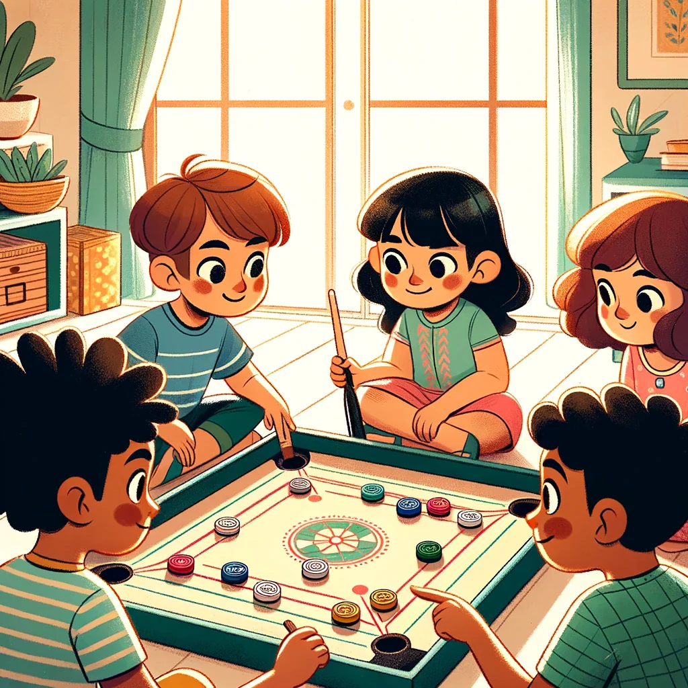

Carrom is a popular indoor tabletop game originating from South Asia. It is played on a square board with pockets in each corner. The objective is to use a striker to flick small discs, known as carrom men, into the pockets. Each player or team tries to pocket their designated carrom men while also aiming to pocket the queen, a special red disc, followed by covering it with their own carrom men to score points. Carrom is a game of skill, strategy, and precision, enjoyed by players of all ages.
